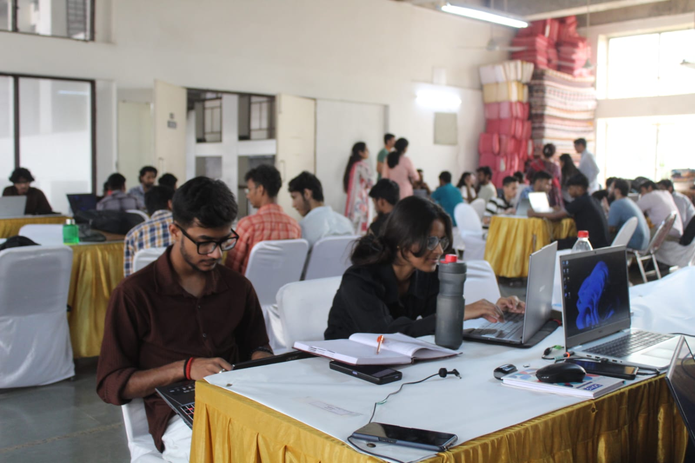
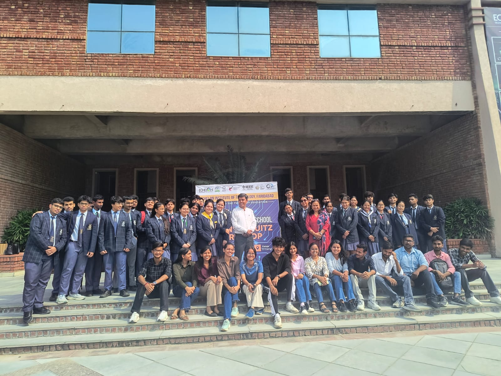
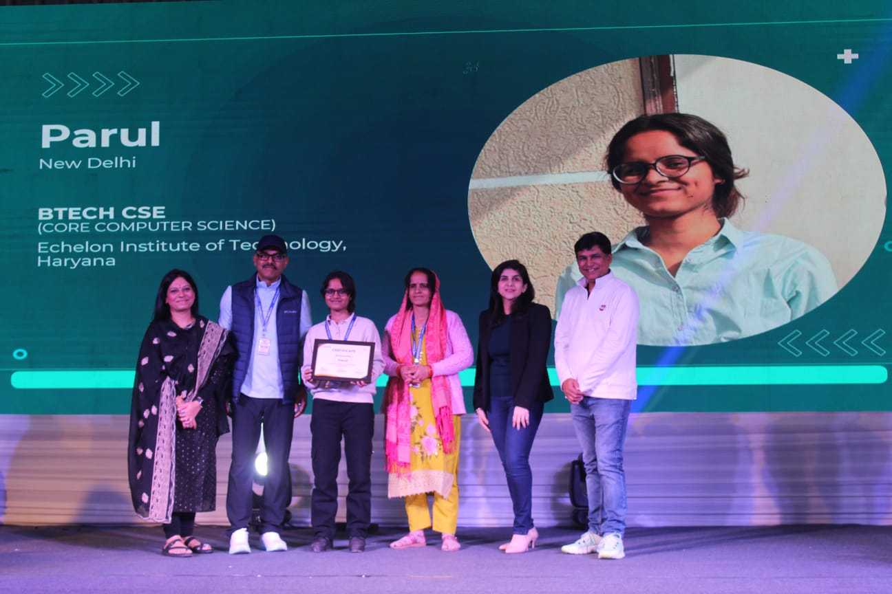
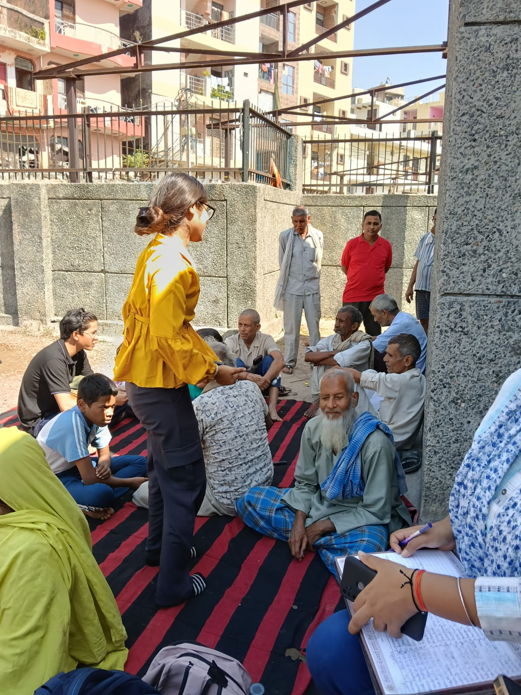

B.Tech CSE Student | Future Software Engineer
Hi, I am Parul Singh. I build, learn, and lead with curiosity.
A second-year Computer Science Engineering student at Echelon Institute of Technology, focused on programming fundamentals, data structures, databases, web development, and practical problem solving.
About Me
Disciplined learner with a strong foundation mindset.
I am a dedicated B.Tech Computer Science and Engineering student in my second year at Echelon Institute of Technology, Faridabad. I enjoy breaking complex topics into clear ideas, practicing consistently, and applying theory to real scenarios.
Along with technical learning, I have leadership experience as an Operational Lead. I have managed teams, coordinated activities, communicated with stakeholders, and helped execute events smoothly.
Capabilities
Skills I am building with intention.
Computer Science
Professional Skills
Selected Work
Projects to show learning, execution, and growth.
Featured
HTML | CSS | JS
Professional Portfolio Website
A responsive personal portfolio built to present education, skills, leadership experience, resume access, and contact details in a professional format.
View Project
Next Project
Python
Problem-Solving Practice Repository
Add a GitHub repository with solved programming problems, explanations, and topic-wise folders for arrays, strings, loops, functions, and data structures.
Ready to addExperience
Leadership experience that supports technical growth.
Operational Lead | Igniters Club, EIT
Managed operations, events, and team coordination.
Oversaw day-to-day activities, coordinated team members, tracked progress, and supported smooth event execution through clear communication and planning.
Academic Journey
B.Tech Computer Science and Engineering
Building core foundations in programming, data structures, computer systems, databases, and emerging technologies with a focus on clarity and consistency.
Gallery
Professional, work, and event moments.
A collection of leadership, technical, academic, and event moments from my learning journey.

Operational Lead
Leadership and coordination experience through club operations.

Organiser | HackIndia
Supporting event execution, coordination, and participant experience.

36 Hour Hackathon
Collaborative problem solving and hands-on technical learning.

Hackathon
Building practical ideas under time constraints with a team mindset.

CodeNCircuits
Exploring coding, circuits, and interdisciplinary technical skills.

Robotics Instructor
Guiding practical robotics learning and technical confidence.

Technical Events
Participating in events that strengthen exposure and collaboration.

Scholar Recognition
Academic growth, consistency, and commitment to learning.

Volunteer
Contributing to event support, teamwork, and on-ground execution.
Learning Goals
What I am focused on next.
01
Build more practical web and programming projects.
02
Strengthen data structures, DBMS, and software fundamentals.
03
Maintain a clean GitHub profile with documented repositories.
Contact